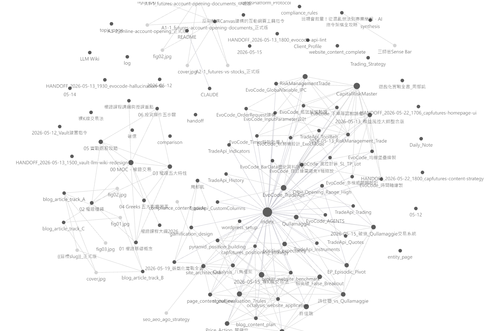

從 AI 焦慮
到 AI 複利
建立你的第二大腦：把 AI 對話、學習、經驗，變成會累積的個人資產。
廖梓棋
50 min × 2
Markdown / Obsidian / Claude MCP
HTML 簡報
AI 不會取代你
但 AI 會取代不會用 AI 累積自己的人。
我以前以為 AI 的賽局是這樣
哪個 AI 最聰明？
今天 ChatGPT 贏，明天 Claude 贏，下週 Gemini 又更新。
哪個 Prompt 最強？
好像只要咒語夠精準，就能解決所有問題。
怎麼問才對？
把注意力放在提問技巧，卻忽略自己的素材庫。
後來我發現：沒有哪個 AI 最厲害
所有 AI 都在以週為單位進化。今天的冠軍，下個月可能就過時。
真正該問的問題
以前的問題
哪個 AI 比較強？哪個 prompt 比較神？
現在的問題
我的大腦，有跟著 AI 一起進化嗎？
於是我開始建立第二大腦
不是為了做漂亮筆記，而是為了讓每一次學習、每一次對話、每一個專案，都能回到同一個系統裡。
AI 對話
不再只停在聊天紀錄。
工作經驗
不再每個案子從零開始。
讀書學習
不再看完就蒸發。
我是誰
期貨營業員 × 程式開發者 × 第二大腦實踐者
我的本業：期貨營業員
一般想像
接電話、報行情、協助交易流程。
我實際在做
寫程式、拆策略、幫客戶把想法變成可以驗證的工具。
但我以前一直有一個痛點
- 以前寫過的程式碼，找得到但想不起脈絡。
- 以前解過的問題，下一次又要重新整理。
- 以前和 AI 討論過的東西，散在不同視窗裡。
建立第二大腦之後
以前
找資料、回想邏輯、重新整理脈絡。
現在
AI 讀我的 vault，直接接上過去的知識。
你的痛
你不是不努力，你只是缺一個容器。
請誠實回想
你上週跟 AI 講的話，現在還找得到嗎？
你上個月學到的東西，有變成可重用資產嗎？
你收藏的文章，真的回來幫過你嗎？
你每次做報告、專案、作品集，是不是又從零開始？
更殘酷的真相
AI 當外送員
每次都叫一份新的答案。吃完就沒了。
AI 當廚房助手
你的冰箱有食材，AI 才能幫你料理。
第二大腦三層架構
載體 × 容器 × 串接
第二大腦不是新概念
Zettelkasten
把想法拆成卡片，靠連結產生新思考。
PARA
用專案、領域、資源、封存來管理資訊。
LLM-Native
AI 可以直接調用你的知識庫。
三層架構：載體 × 容器 × 串接
| 層級 | 工具 | 作用 |
|---|---|---|
| ① 載體 | Markdown | 讓知識變成可攜、可讀、可長期保存的純文字。 |
| ② 容器 | Obsidian | 把筆記、專案、書摘、每日記錄放進同一個 vault。 |
| ③ 串接 | Claude Desktop + MCP | 讓 AI 從你的知識庫回答，而不是只從網路回答。 |
為什麼是 Markdown？
一次寫，永遠用，到處用。
檔案格式 = 你的記憶壽命
封閉格式
Word、Notion、PDF、截圖。好看，但常常被工具綁住。
Markdown
純文字、可搜尋、可搬移、AI 最容易讀。
Markdown 看起來像這樣
# 今天學到的重點
## 觀念
- AI 的價值不只在回答，而在累積
- 第二大腦需要載體、容器、串接
## 可行動
1. 建立 daily note
2. 把今天的 AI 對話整理成一篇筆記
3. 加上連結：[[AI 複利]]同一份 .md，到處都能開
Obsidian
連結、graph、插件。
VS Code
快速搜尋與編輯。
任何 AI
直接讀、直接整理。
未來工具
不怕平台改版。
為什麼是 Obsidian？
不是雲端筆記，而是你的本地知識庫。
市面上的選擇
| 工具 | 強項 | 限制 |
|---|---|---|
| Notion | 資料庫、協作、版面漂亮 | 資料在平台中，AI 串接不一定自由 |
| Evernote / OneNote | 傳統筆記、剪藏 | 知識連結與純文字可攜性較弱 |
| Roam / Logseq | 雙向連結 | 學習曲線或穩定性各有取捨 |
| Obsidian | 本地檔案、純 MD、graph、plugin | 需要自己建立習慣 |
這是我自己的 Vault Graph

我 vault 裡有什麼？
工作專案
EvoCode、TradeApi、策略拆解、客戶需求。
書籍課程
《遊戲化實戰》、《裸 K 線交易法》與課程筆記。
日常累積
Daily Note、AI 對話、HANDOFF 系列。
讓 AI 讀你的大腦
Claude Desktop + MCP
過去：你問 AI，AI 從網路答
它很聰明，但不認識你
它不知道你上次做過什麼、不知道你讀過哪些書、不知道你過去犯過哪些錯。
現在：AI 讀你的 vault，再答你
AI 變成認識你的同事
它可以引用你的專案、你的讀書筆記、你的 Daily Note，回答會更貼近你的脈絡。
實現方式：Claude Desktop + MCP
裝 Claude Desktop
讓 AI 有本機入口。
準備 Obsidian Vault
把知識放在本地資料夾。
設定 MCP
讓 Claude 能讀指定資料夾。
現場示範
連上 vault
問一個真問題
AI 整理脈絡
寫回 vault
我的真實用法
做法 × 累積效果
用法一：拆解過去寫過的程式
做法
把 EvoCode、TradeApi 的程式碼與開發筆記整理進 vault。
累積效果
新專案可以直接請 AI 找相似邏輯、解釋舊決策、產生改版方向。
用法二：讀書不再消失
做法
讀《遊戲化實戰》、《裸 K 線交易法》時，摘出觀念、例子、自己的想法。
累積效果
書讀完不是結束，而是未來簡報、文章、交易研究的新素材。
用法三：Daily Note 每日累積
做法
每天只記三件事：今天做了什麼、卡在哪裡、明天要接哪裡。
累積效果
幾個月後，你會擁有一份自己成長的可搜尋時間線。
進階心法：HANDOFF Note
讓不同對話、不同 AI 工具，都能接上同一段記憶。
# HANDOFF
## 目前狀態
我正在整理第二大腦課程簡報。
## 已決定
- 主軸：AI 複利
- 工具：Markdown / Obsidian / Claude MCP
## 下一步
請根據這份脈絡，幫我補一頁 demo 流程。今天就開始
第一週、第一個月、第三個月
第一週：把工具裝起來
安裝 Obsidian
建立第一個 vault。
寫 Daily Note
不用漂亮，只要真實。
整理一段 AI 對話
把有價值的內容存成 .md。
第一個月：建立習慣
每週一份整理
課程、文章、專案、AI 對話都可以。
開始做連結
用 [[雙向連結]] 把概念接起來。
少量插件
先用必要的，不急著把工具玩滿。
第三個月：感受複利
回頭搜尋
你會開始被過去的自己幫到。
建立模板
專案、讀書、會議、日記都能模板化。
嘗試 MCP
讓 AI 接上你的 vault。
身分選擇
五年後，你想成為哪一種人？
五年後的你，會是哪一種？
A 型：沒有累積
用了很多 AI，卻每次都從空白開始。
B 型：有知識複利
每一次學習都變成下一次的起點。
AI 不會取代你，
但 AI 會取代不會用 AI 累積自己的人。
差距不在天份，在系統。
今晚的功課
安裝 Obsidian
建立第一個 vault
寫一篇 Daily Note
整理一段 AI 對話
謝謝
廖梓棋
LINE ID：csdm67931